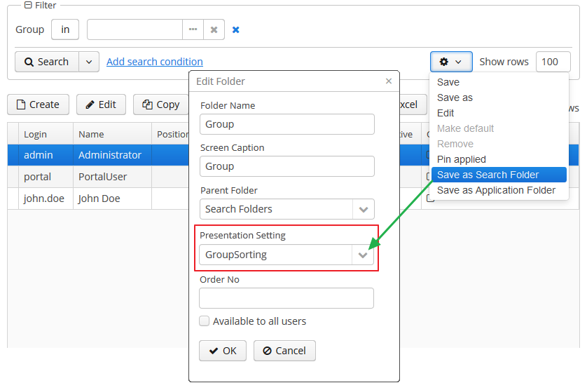

3.5.2.1.18. 过滤器
在这章节包含下面这些内容:
Filter 是一个具有非常多功能的过滤器，可以对展示成列表或者表格形式的数据库实体列表进行过滤。这个组件支持按照任意条件对数据进行快速过滤，同时也支持创建可重复使用的过滤器。
Filter 需要连接到一个包含数据加载器的集合型数据容器或者包含 JPQL查询的集合型数据源。实现的主要逻辑是按照用户设置的过滤条件对这个 JPQL 查询进行修改。所以，过滤其实是发生在数据库层面，通过执行修改后的 SQL，查询出来的数据被加载到中间件和客户端层。
使用过滤器
一个典型的过滤器是这样的：
默认情况下，这个组件使用快速过滤模式。意味着用户可以添加一组过滤条件进行一次数据搜索，一旦这个界面关掉之后，设置的过滤条件也就没了。
创建一个快速过滤器，点击 Add search condition - 添加搜索条件 链接，会显示条件选择的界面：
下面是一些可用的过滤条件类型:
-
Attributes - 属性 – 实体属性和关联的实体，只能用持久化的实体属性。这些属性要满足下面两种情况之一：要么在过滤器的 XML 描述里面显式的设置在
property元素里，要么符合 properties 元素定义的规则。 -
Custom conditions - 自定义条件 – 由开发人员在过滤器 XML 描述中的
custom元素设置的过滤条件。 -
Create new… - 新建过滤器… – 创建新的 JPQL 条件过滤器。这个选项只对具有
cuba.gui.filter.customConditions权限的用户开放。
选中的过滤条件会在过滤器区域顶部显示。这个  条件移除图标会在每个条件的旁边显示，允许移除已选择的条件。
条件移除图标会在每个条件的旁边显示，允许移除已选择的条件。
可以保存快速过滤器以便将来使用。要保存一个快速过滤器，点击过滤器设置按钮，选择 Save/Save as - 保存/另存为 然后在对话框输入一个新的过滤器名字：

保存之后，这个过滤器就会在 Search - 搜索 按钮的下拉框中显示。
Reset filter 菜单可以用来重置当前应用的查询条件。

用于过滤器设置的弹窗按钮提供一系列过滤器管理的选项：
-
Save - 保存 – 保存当前过滤器的修改
-
Save with values - 带值保存 – 保存当前过滤器的修改，并且将参数编辑器里面的值保存为过滤器的默认条件值。
-
Save as - 另存为 – 将过滤器另存为一个新名称。
-
Edit - 编辑 – 打开过滤器编辑（参阅下面）。
-
Make default - 设置默认 – 设置当前界面的默认过滤器。当界面打开时，这个过滤器会自动显示在过滤器区域。
-
Remove - 删除 – 删除当前的过滤器。
-
Pin applied - 保留已选 – 使用上次查询的结果来做级联过滤（参考级联过滤 ）。
-
Save as search folder - 另存为搜索文件夹 – 以当前的过滤器创建一个文件夹。
-
Save as application folder - 另存为应用程序文件夹 – 以当前的过滤器创建一个应用程序文件夹。此功能只对有
cuba.gui.appFolder.global权限的用户开放。
Edit 选项打开过滤器编辑器，可以对当前过滤器进行高级设置：
Name 字段应该填写过滤器的名称。这个名称会显示在当前界面可用的过滤器列表里。
过滤器可以通过 Available to all users 复选框设置成 全局 的（也就是所有用户都能用），或者通过 Global default 复选框设置成 全局默认 的。这些操作需要一个特殊的权限，叫做 CUBA > Filter > Create/modify global filters。如果这个过滤器被标记成 全局默认 的话，那么当任何用户打开这个界面的时候，就会自动加载这个过滤器的数据。用户可以使用 Default for me 复选框设置他们自己的默认过滤器，这个设置会覆盖 全局默认 过滤器。
这些过滤器的过滤条件包含在树状结构里，可以通过 Add 按钮添加，通过  交换位置，或者通过 Remove 按钮删除。
交换位置，或者通过 Remove 按钮删除。
AND 或者 OR 分组条件可以通过相应的按钮添加，所有顶层过滤条件（比如没有显式的分组）都是通过 AND 连接。
在树状结构选择过滤条件时，会在编辑器的右边打开一个条件属性的列表。
过滤条件可以通过相应的复选框设置成隐藏或者必要。隐藏的条件参数对用户来说是不可见的，所以应该在编辑过滤器的时候显示出来。
Width 属性是在过滤器区域为当前条件的字段设置显示宽度。默认情况下，在过滤器区域的条件都显示成三列。这里字段的显示宽度也就是字段需要占据的列的数目（1，2 或者 3）。
当前条件的默认值可以在 Default value 里面选择。
自定义的过滤器条件名称可以设置在 Caption 字段。
Operation 提供选择条件的运算符。跟据属性的类型确定可选的运算符列表。
如果实体有 DateTime 类型的属性，且此属性没有 @IgnoreUserTimeZone 注解，那么在过滤器里面会采用用户的时区默认作为这个属性的时区。如果是 Date 类型的话，可以通过自定义过滤条件编辑器里面的 Use time zone 标记来定义是否使用用户的时区来处理这个字段。
过滤器组件介绍
该组件对应的 XML 名称： filter
下面是在界面 XML 中定义这个组件的示例：
<data readOnly="true">
<collection id="carsDc" class="com.haulmont.sample.core.entity.Car" view="carBrowse">
<loader id="carsDl" maxResults="50">
<query>
<![CDATA[select e from sample_Car e order by e.createTs]]>
</query>
</loader>
</collection>
</data>
<layout expand="carsTable" spacing="true">
<filter id="filter" applyTo="carsTable" dataLoader="carsDl">
<properties include=".*"/>
</filter>
<table id="carsTable" width="100%" dataContainer="carsDc">
<columns>
<column id="vin"/>
<column id="colour"/>
<column id="model"/>
</columns>
<rowsCount/>
</table>
</layout>在上面的例子中，在界面的 data 层定义了一个数据容器使用 JPQL 查询 Car 实体。在 filter 组件的 loader 属性中定义了需要被过滤的数据，数据由 数据加载器 提供。采用表格组件显示数据，也是关联了相同的数据容器。
filter 可以包含嵌套元素。这些元素主要用来描述用户可以在 Add Condition 对话框中能使用的过滤条件：
-
properties– 多个实体属性通过这项配置成可用。这个元素有如下属性：-
include– 必带属性。包含一个正则表达式，能匹配实体的属性名称。
-
exclude– 包含一个正则表达式，如果实体属性能匹配此项，那么会从之前的include配置中排除掉。
-
excludeProperties– 包含一个英文逗号分隔的应该被排除掉的属性路径列表。跟之前的exclude不同，这里支持遍历实体关系图，比如customer.name。
-
excludeRecursively- 设置excludeProperties里面定义的属性是否需要递归的排除掉。如果设置的true，那么属性和它的嵌套属性，只要是相同名称的，都会被排除掉。示例:
<filter id="filter" applyTo="ordersTable" dataLoader="ordersDl"> <properties include=".*" exclude="(amount)|(id)" excludeProperties="version,createTs,createdBy,updateTs,updatedBy,deleteTs,deletedBy" excludeRecursively="true"/> </filter>通过编程的方式排除属性，使用
Filter组件的setPropertiesFilterPredicate()方法:filter.setPropertiesFilterPredicate(metaPropertyPath -> !metaPropertyPath.getMetaProperty().getName().equals("createTs"));
当使用
properties元素的时候，下面这些实体属性不能作为过滤条件： -
-
property– 显式地根据属性名来包含一个实体属性。这个元素有下面这些属性：-
name– 必须属性，指定需要包含的实体属性的名称。可以是实体关系图里面的路径（使用“.”）比如：<filter id="transactionsFilter" dataLoader="transactionsDl" applyTo="table"> <properties include=".*" exclude="(masterTransaction)|(authCode)"/> <property name="creditCard.maskedPan" caption="msg://EmbeddedCreditCard.maskedPan"/> <property name="creditCard.startDate" caption="msg://EmbeddedCreditCard.startDate"/> </filter>
-
caption– 在过滤条件显示的本地化实体属性名称。通常是以msg://开头的符合 MessageTools.loadString() 规则的字符串。如果
name属性设置的是实体关系图里面的路径，那么caption必须要提供。
-
paramWhere− 在参数是关联的实体的情况下，用这个参数来设置 JPQL 表达式用以选取条件参数的列表。这里需要用{E}占位符来代表实体而不能用实体的别名。比如，假设
Car有Model的引用，那么参数值的列表可以限制到只取Audi型号：<filter id="carsFilter" dataLoader="carsDl"> <property name="model" paramWhere="{E}.manufacturer = 'Audi'"/> </filter>使用会话(session)和界面参数的例子如下：
{E}.createdBy = :session$userLogin and {E}.name like :param$groupName使用
paramWhere语句，可以引入参数之间的依赖。比如，假设Manufacturer是一个独立的实体。Car有Model的属性，而Model又有Manufacturer的属性。那么可以给 Cars 创建两个过滤条件：第一个选择一个 Manufacturer，第二个选择 Model。为了用前一个过滤条件选出的 manufacturer 来限制第二个过滤条件 models 的列表，可以在paramWhere表达式添加一个参数：{E}.manufacturer.id = :component$filter.model_manufacturer90062这个参数引用了一个显示 Manufacturer 参数的组件。如果在过滤器编辑界面鼠标右键点击过滤条件列表的一行，可以在弹出菜单中看到组件的名称：

-
paramView− 指定一个视图。如果过滤器参数关联了一个实体，可以用视图来加载过滤条件参数值列表。比如，_local。如果视图没有指定，默认会使用_minimal视图。
-
-
custom这个元素用来定义一个定制化的过滤条件。元素的内容需要是 JPQL 表达式（也能使用JPQL 宏），这个表达式会被添加到数据容器查询语句的where条件后面。这里需要用{E}占位符来代表实体而不能用实体的别名。这个条件最多只能用一个以“?”标记的参数。定制化的条件的值可以用特殊字符，比如"like"操作符需要的 "%" 或者 "_"。如果需要转义这些字符，可以在条件里面添加
escape '<char>'，比如：{E}.name like ? escape '\'这样如果采用
foo\%作为过滤条件的参数值，搜索时会将"%"作为普通字符而非特殊字符。下面这个例子演示了采用定制化条件的过滤器：
<filter id="carsFilter" dataLoader="carsDl"> <properties include=".*"/> <custom name="vin" paramClass="java.lang.String" caption="msg://vin"> {E}.vin like ? </custom> <custom name="colour" paramClass="com.company.sample.entity.Colour" caption="msg://colour" inExpr="true"> ({E}.colour.id in (?)) </custom> <custom name="repair" paramClass="java.lang.String" caption="msg://repair" join="join {E}.repairs cr"> cr.description like ? </custom> <custom name="updateTs" caption="msg://updateTs"> @between({E}.updateTs, now-1, now+1, day) </custom> </filter>custom过滤条件在 Add condition 窗口的 Custom conditions 区域显示：
custom的 XML 属性:-
name− 必须，过滤条件的名称。
-
caption− 必须，过滤条件的本地化名称。通常是一个以msg://开头的字符串，需要符合 MessageTools.loadString() 规范。
-
paramClass− 过滤条件参数的 Java 类。如果参数没有指定，这个参数就不必须。
-
inExpr− 如果 JPQL 表达式中包含in (?)，则这个属性就需要设置成true。这样的话，用户能手动输入几个过滤条件参数值。
-
join− 可选属性。设置一个字符串，会被添加在数据容器查询语句的from部分。如果要依赖关联实体集合的属性来创建一个复杂的过滤条件，可以用这个属性。这个属性值应该包含join和left join语句。比如，假设
Car实体有repairs属性，关联Repair实体的集合。那么可以创建下面这个过滤条件来使用Repair实体的description属性过滤Car：<filter id="carsFilter" dataLoader="carsDl"> <custom name="repair" caption="msg://repair" paramClass="java.lang.String" join="join {E}.repairs cr"> cr.description like ? </custom> </filter>如果用了上面这个过滤条件，原来的数据容器查询语句
select c from sample_Car c order by c.createTs会被转化成下面这样：
select c from sample_Car c join c.repairs cr where (cr.description like ?) order by c.createTs -
paramWhere− 在参数是关联的实体的情况下，用这个参数来设置 JPQL 表达式用以选取条件参数的列表。参考property元素的同名属性的描述。 -
paramView− 指定一个 视图。如果过滤器参数关联了一个实体，可以用视图来加载过滤条件参数值列表。参考property元素的同名属性的描述。
-
filter 属性:
-
editable– 如果这个属性是false，Edit 选项会被禁用。
-
applyImmediately– 设置过滤器何时生效。当设置成false时，过滤器会使用显式操作模式。此时，过滤器只有在点击 Search 按钮时才会生效。当设置成true时，过滤器会以即时模式工作，每个对于过滤器参数的调整都会立即生效，数据会自动刷新。下面这几个常见的场景过滤器会自动生效：-
参数字段的值变化之后；
-
改变条件操作符；
-
从过滤器移除一个条件；
-
Show rows 字段变化；
-
当在过滤器编辑窗口点击 OK 按钮；
-
在清空所有值之后；
即时模式时，会使用 Refresh 按钮而非 Search 。
applyImmediately属性的优先级比 cuba.gui.genericFilterApplyImmediately 应用程序属性的优先级高。 -
-
manualApplyRequired− 定义过滤器生效的时机。如果这个属性设置的false，这个过滤器（默认或者空）会在界面打开时生效。意味着数据容器会被刷新、与其关联的界面组件（比如表格）会显示数据。如果这个属性设置为true，只有当用户点击 Search - 搜索 按钮的时候才会生效。这个属性的优先级比应用程序属性 cuba.gui.genericFilterManualApplyRequired 的优先级要高。
-
useMaxResults− 是否需要限制加载到数据容器的数据量。默认设置的true。如果这个属性设置的
false，过滤器不会显示 Show rows - 显示行数 控件。数据容器中的数据记录条数（同时也显示在表格里）只受到实体统计的MaxFetchUI参数限制，默认是 10000 条。如果这个属性没设置或者设置为
true，只有当用户有cuba.gui.filter.maxResults权限的情况下才显示 Show rows 控件。如果用户没有获得cuba.gui.filter.maxResults权限的授权，过滤器会强制加载 N 条数据，用户也没办法去禁用或者指定另一个 N 值。N 是用FetchUI和DefaultFetchUI参数定义的，这两个参数是从实体统计机制中读取的。下面这个过滤器有这些参数：
useMaxResults="true"、cuba.gui.filter.maxResults权限被禁止 、DefaultFetchUI = 2。

-
textMaxResults- 使用文本输入控件而不是下拉列表来作为 Show rows 控件。默认值false。
-
folderActionsEnabled− 如果设置成false，这两个操作会被隐藏：Save as Search Folder 、 Save as Application Folder。默认值是true，这些操作都可用。
-
applyTo− 可选属性，包含跟过滤器关联的组件标识符。当需要访问关联组件的presentations - 展示设置的时候需要设置这个属性。比如，保存过滤器作为搜索文件夹或者应用程序文件夹的时候，当要访问这些目录的时候就会应用展示样式。
-
caption- 给过滤器区域设置自定义的标题。
-
columnsCount- 定义过滤器区域过滤条件所占的列数。默认是 3。
-
defaultMode- 定义过滤器的默认模式。可以选generic和fts。如果设置的fts，过滤器会用全文检索的模式打开（实体需要建立全文检索的索引）。默认值是generic。
-
modeSwitchVisible- 定义是否显示切换到全文检索模式的复选框。如果全文检索不可用，不管这个值如何设定，复选框都不可见。默认是true。
Filter 接口的方法
-
setBorderVisible()- 设置是否需要显示过滤器的边框，默认是true。
Filter 的监听器
-
ExpandedStateChangeListener- 过滤器面板展开状态改变监听器。
-
FilterEntityChangeListener- 当组件初始化的时候第一次选择过滤器或者之后切换到其它保存的过滤器的时候触发。
- filter 的属性
-
applyTo - caption - captionAsHtml - columnsCount - css - dataLoader - datasource - defaultMode - description - descriptionAsHtml - editable - enable - box.expandRatio - folderActionsEnabled - id - manualApplyRequired - margin - modeSwitchVisible - settingsEnabled - stylename - textMaxResults - useMaxResults - visible - width
- filter 的 XML 元素
-
custom - properties - property
- properties 的 XML 属性
- property 的 XML 属性
-
caption - name - paramView - paramWhere
- custom 的 XML 属性
-
caption - name - inExpr - join - paramClass - paramView - paramWhere
- API
-
addExpandedStateChangeListener - addFilterEntityChangeListener - applySettings - getMargin - saveSettings - setMargin
用户权限
-
需要创建/修改/删除全局（对所有用户可见）过滤器，用户需要有
cuba.gui.filter.global权限。 -
需要创建/修改
custom过滤条件，用户需要有cuba.gui.filter.customConditions权限。 -
需要使用 Show rows 控件修改表格每页加载的最大行数，用户需要有
cuba.gui.filter.maxResults权限。参考过滤器属性 useMaxResults。
其它特定的权限配置内容，参考 安全子系统。
外部控制过滤器的参数
-
系统级参数
下面这些应用程序属性会影响过滤器的行为：
-
cuba.gui.genericFilterManualApplyRequired − 禁用界面打开时过滤器自动生效（比如加载数据）还可以参考 manualApplyRequired 过滤器属性。
-
cuba.gui.genericFilterChecking − 在应用过滤器前，检查至少配置了一个过滤条件。
-
cuba.gui.genericFilterControlsLayout − 定义过滤器控件的内部布局。
-
cuba.gui.genericFilterColumnsCount - 设置过滤器区域摆放过滤条件的默认列数。也可参考 columnsCount 过滤器属性。
-
cuba.gui.genericFilterConditionsLocation - 定义过滤器区域的位置。
-
cuba.gui.genericFilterPopupListSize - 定义 Search 按钮弹出框能显示的最多条目数。
-
cuba.gui.genericFilterTrimParamValues - 定义所有通用过滤器是否要先清掉输入文本两端的空格。
-
-
界面调用参数
在界面打开时，系统应当提供自动生效的过滤器及其默认参数。为了实现这个效果，这个过滤器需要提前创建，保存在数据库，
SEC_FILTER表需要有一条相应的记录，并且CODE字段需要有值。界面调用的参数都在web-menu.xml配置文件里面设置。要把过滤器保存在数据库，过滤器的 insert 脚本应当添加在实体的
30.create-db.sql数据库脚本里。为了简化脚本的创建，可以在 Administration - 管理 菜单的 Entity Inspector - 实体探查 子菜单找到过滤器实体，右键点击过滤器列表选择 System Information - 系统信息，点击 Script for insert - 插入脚本 按钮，可以拷贝脚本内容。然后可以修改界面默认使用这个过滤器。要指定过滤器的代码，需要传给界面一个跟过滤器组件同名的参数，参数的值是过滤器的代码。
需要设置过滤器参数值的话，需要传给界面参数的名称跟过滤器的参数名称一致，然后这些参数的值是过滤器的值，需要是字符串类型。
下面是一个在描述文件中定义主菜单项的例子。这里用
FilterByVIN代码为sample$Car.browse界面carsFilter组件设置过滤器。同时还给component$carsFilter.vin79216条件设置了参数值TMA：<item id="sample$Car.browse"> <param name="carsFilter" value="FilterByVIN"/> <param name="component$carsFilter.vin79216" value="TMA"/> </item>需要注意的是，定义了
CODE字段的过滤器有些特性：-
不能被用户编辑。
-
过滤器的名称可以多语言显示。可以在主消息包里面给过滤器代码设置名称。
-
级联使用过滤器
如果设置了 cuba.allowQueryFromSelected 应用程序属性，可以用组件的界面上暂存（pin）上次和本次过滤器应用的结果。保存之后，另一个过滤器或者当前过滤器采用不同参数就可以在目前过滤出的数据范围内进行进一步的过滤。
这个方案可以达到以下两个目标：
按照下面的步骤使用级联过滤。首先，选择并且应用一个过滤器。然后点击过滤器设置按钮选择 Pin applied。然后这个过滤器会被固定到过滤区域的顶部。之后另一个过滤器可以在此基础上应用，如此往复。级联过滤器数量没有限制。也可以通过  按钮移除之前固定的过滤器。
按钮移除之前固定的过滤器。

能连续使用过滤器是基于 DataManager的级联查询功能。
过滤器参数的 API
Filter 接口提供了在界面控制器读写过滤器参数的方法：
-
setParamValue(String paramName, Object value) -
getParamValue(String paramName)
paramName - 过滤器参数名称。参数名称是显示参数值的组件的一部分。获取组件名称的过程上面说过了。参数名称放置在组件名称的最后一个 . 的后面。比如，如果组件名称是 component$filter.model_manufacturer90062，那么参数名称是 model_manufacturer90062。
注意不能在界面控制器的 InitEvent 处理器中使用这些方法，因为过滤器在那时还没有初始化。比较合适的使用过滤器参数的地方是在 BeforeShowEvent 处理器中。
过滤器的全文搜索模式
如果过滤器的数据容器被全文检索子系统（参考 CUBA Platform. 全文搜索）做了全文索引的话，那么这个过滤器可以使用全文检索模式。用 Full-Text Search 复选框切换到这个模式。
在全文检索模式里，过滤器包含了文本控件用来做搜索规则，搜索也是在 FTS 子系统做了索引的那些实体字段中进行。
如果在 applyTo 属性定义了一个表格，当把鼠标指针移到表格的某一行的时候，就会提示哪些实体属性支持查询条件。
如果要隐藏过滤器模式切换的复选框，可以设置 modeSwitchVisible 为 false。
如果需要过滤器默认就打开全文检索模式，可以设置 defaultMode 为 fts。
全文检索跟其它任意过滤器条件组合使用：

FTS condition 可以在条件选择器窗口进行选择。